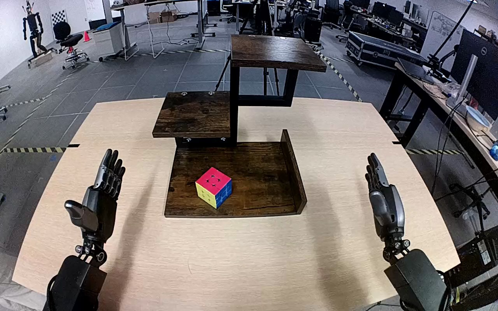

NVIDIA GR1 · 82
Video 82

Visual review action_review.json
{
"prompt_protocol": "humanoid_action_v1",
"prompt_provenance": "visually_authored_from_video_and_initial_frame",
"reviewed_contact_sheets": [
"sheet_001.jpg"
],
"inspected_frame_stride": 2,
"inspected_sampled_frame_count": 60,
"initial_scene": "Robot-centered forward view with both forearms entering from the lower corners. A multicolored puzzle cube rests on the lowest wooden shelf; the middle and highest shelves are empty.",
"observed_sequence": [
{
"start_frame": 0,
"end_frame": 15,
"action": "Both hands are open and stationary beside the shelves; cube rests on the bottom shelf.",
"confidence": "high"
},
{
"start_frame": 16,
"end_frame": 55,
"action": "Right arm reaches inward toward the cube with hand open, positioning the thumb and fingers on opposing sides; left hand remains idle.",
"confidence": "high"
},
{
"start_frame": 56,
"end_frame": 75,
"action": "Right fingers and thumb close around the cube while it remains near the bottom shelf surface. The cube shifts and tilts slightly during establishment of the grasp.",
"confidence": "high"
},
{
"start_frame": 76,
"end_frame": 99,
"action": "Right hand lifts the cube clear and carries it upward toward the highest shelf. Left hand does not contact the object or shelves.",
"confidence": "high"
},
{
"start_frame": 100,
"end_frame": 114,
"action": "Right arm positions the held cube over the highest shelf and lowers it toward the wooden surface. Cube passes partly above the upper image boundary during this motion.",
"confidence": "high"
},
{
"start_frame": 115,
"end_frame": 119,
"action": "Right hand opens while the cube comes to rest upright on the highest shelf. Fingers and thumb separate from opposite sides; the right hand remains beside the cube rather than fully withdrawing.",
"confidence": "high"
}
],
"arm_hand_roles": {
"right": "Sole manipulating hand: surrounds, grasps, lifts, transports and releases the cube on the highest shelf.",
"left": "Open idle hand beside the table throughout; no supporting contact or transfer."
},
"anatomical_side_evidence": "The forward robot-centered camera shows paired forearms extending from the robot position at the lower corners, with the active forearm continuing from the lower-right side and the passive forearm from lower-left. Hand/thumb orientation and continuous visible wrist-to-forearm attachment corroborate right versus left in this body-aligned view. This is not a frontal view of a robot with reversed image/anatomical sides. Shoulders and torso are outside the image.",
"coordination": "Single-handed manipulation; the left hand remains clear and does not stabilize the shelf or receive the cube.",
"evidence_frame_indices": [
0,
40,
58,
72,
84,
100,
114,
116,
117,
118,
119
],
"last_frame_index": 119,
"initial_png_inspected_at_native_resolution": true,
"terminal_state": "The multicolored cube stands upright on the highest wooden shelf. The right hand is open immediately beside it, with no full withdrawal shown; the lower shelf is empty and left hand remains idle.",
"selected_execution_status": "success",
"uncertainties": [
"Torso and shoulder attachment are outside the body-aligned camera view; anatomical sides are grounded in paired arm origins and hand orientation.",
"Some far-side finger contact and the exact bottom contact point during lowering are occluded by the right hand; terminal release and upright shelf placement are visible."
],
"annotation_discrepancies": [],
"inspection_coverage": "Viewed the complete returned sheet covering all 60 even-index samples from 0 through 118 of the 120-frame sequence, the source initial PNG at native resolution, and 10 native transition/final frames. Entire original sequence retained.",
"video_id": "82",
"dataset": "NVIDIA_GR1_100",
"dedicated_review_agent": "review_gr1_82",
"review_source_video": "NVIDIA_GR1_100/82/original/original.mp4",
"source_frame_count": 120,
"source_fps": 20.0,
"native_detail_frames": [
40,
58,
72,
84,
100,
114,
116,
117,
118,
119
],
"world_model_prompt": "The robot uses its right hand to grasp the multicolored cube on the bottom wooden shelf, closing its fingers and thumb around opposite sides and lifting it clear. It carries the cube up to the top shelf, lowers it onto the wood, and opens its hand, leaving the cube standing there with the hand beside it. Keep the camera fixed; preserve robot geometry, physically valid joint motion, and normal gripper opening and closing.",
"original_task_instruction": "Use the right hand to pick up rubik's cube from bottom wooden shelf to top wooden shelf.",
"selected_segment": {
"start_frame": 0,
"end_frame_exclusive": 120,
"reason": "Complete original single-task reference; no cropping or trimming requested."
},
"source_video_sha256": "fce762bab9d3af0160ef4cd2bd629c28adce2d84261108949997adcd40623fc7",
"review_completed_at": "2026-10-13T18:35:10.540231+00:00"
}